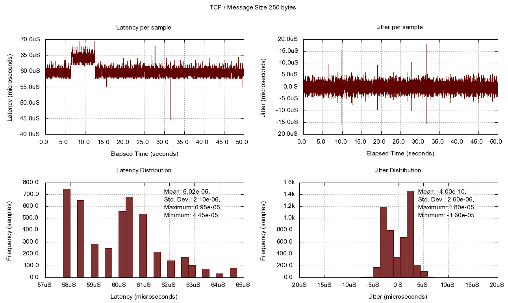

tcp-250
Reliable Multicast � Best Effort Multicast � UDP � TCP 50 bytes / 100 bytes / 250 bytes / 500 bytes / 1000 bytes / 2500 bytes / 5000 bytes / 8000 bytes / 16000 bytes / 32000 bytes
Tags: plots, tcp, publish
DonBusch, Sun 28 Mar 2010 12:36:00 PM CST (created Sun 21 Mar 2010 02:05:00 PM CST)